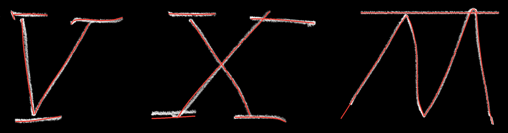

LaFleurStudio · 2026
JALOUSIA NET
Chiffres romains néo-gothiques, au trait net : la même main que Jalousia Craie, sans le grain.
4 graisses aux noms latins, de Centum à Quadringenti, chacune avec son italique.
Les graisses
De 100 à 400, chacune avec son italique. Leurs noms comptent en latin : Centum veut dire « cent », Quadringenti « quatre cents ».
Testeur
Clique sur le texte pour écrire le tien.
Astuce : les 8 styles sont dans une seule famille « Jalousia Net », en droit et en italique (voir « Télécharger »).
Caractères
Majuscules, minuscules, chiffres, ponctuation et symboles, et les accents de toutes les langues d’Europe à alphabet latin : français, allemand, espagnol, polonais, tchèque, hongrois, roumain, turc, baltes, nordiques… 320 caractères, accents combinants compris.
Comment on l'a faite
Jalousia Net est dessinée de zéro, en Python : chaque lettre est une suite de traits, épaissis de la même façon partout.
Des chiffres romains à la main
Tout part de chiffres romains néo-gothiques dessinés à la craie : I, V, X, L, C, D et M, avec leurs barres ondulées, leurs crochets et leurs pieds.

Tracées trait par trait
Chaque lettre est suivie trait par trait sur le dessin, puis le trait est épaissi régulièrement.
Le C dessiné était trop large : il est devenu rond. La jambe gauche du M a été prolongée jusqu'en bas.

Le reste avec leurs morceaux
Les autres lettres sont faites avec les pièces des dessins : le fût et le pied du T, la panse du R, les barres du V, le crochet du C… Le W, c'est le M à l'envers.
Les minuscules reprennent les mêmes pièces, à 60 % de la hauteur des capitales.
Net, et Craie
Le même dessin existe en deux polices. Jalousia Net garde un trait propre et rond, régulier d'un bout à l'autre.
Jalousia Craie reprend exactement les mêmes lettres, avec le grain de la craie.
Des lettres qui se glissent
Les lettres se glissent les unes sous les autres tant que leurs traits restent à bonne distance : un point sous la barre du T, un e sous la barre du V.
Les barres de V et W vont jusqu'à toucher la lettre d'à côté.
Quatre graisses aux noms latins
Les graisses viennent d'un seul réglage : l'épaisseur du trait. L'écart entre les lettres et la place des accents grandissent un peu avec elle.
| Style | Poids | Épaisseur du trait |
|---|---|---|
| Centum | 100 | 22 |
| Ducenti | 200 | 34 |
| Trecenti | 300 | 46 |
| Quadringenti | 400 | 60 |
| Épaisseurs en unités (1000 par em). Hauteur des capitales : 700, des minuscules : 420. Fichiers de 160 à 200 Ko. | ||
L'italique
Chaque graisse, penchée à 12°, avec des minuscules plus manuscrites : les pieds deviennent des sorties vers la droite, le f descend sous la ligne, v, w, x et y s'arrondissent.
Télécharger
Usage personnel : gratuit. Projets perso, études, essais, maquettes.
Usage commercial : sur autorisation. Logo, client, produit vendu, pub, site d'entreprise… écris à info@lafleurstudio.ch. Chaque projet est étudié : l'autorisation peut être gratuite ou payante.
Revente, partage des fichiers et modification interdits sans accord. Texte complet : LICENCE.txt.
Sur un site web
@font-face { font-family: "Jalousia Net"; font-weight: 300;
src: url(JalousiaNet-Trecenti.woff2) format("woff2"); }
@font-face { font-family: "Jalousia Net"; font-weight: 300;
font-style: italic;
src: url(JalousiaNet-TrecentiItalic.woff2) format("woff2"); }
/* … une règle par style : Centum 100, Ducenti 200,
Trecenti 300, Quadringenti 400, et la même chose en italique */
/* Ponctuation des capitales (tirets, guillemets) */
.capitales { font-feature-settings: "case" 1; }